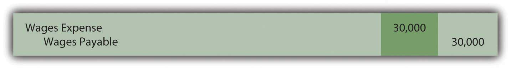

Joe introduces Chapter 13 "In a Set of Financial Statements, What Information Is Conveyed about Current and Contingent Liabilities?" and speaks about the course in general.
At the end of this section, students should be able to meet the following objectives:
Question: The June 30, 2009, consolidated balance sheet for The Procter & Gamble Company and its subsidiaries reports total liabilitiesFuture sacrifices of economic benefits arising from present obligations; the debts of an organization. of over $71 billion, including current liabilities of approximately $31 billion. That seems to be a rather large figure, especially for an organization holding only $3.3 billion in cash and cash equivalents.
For reporting purposes, the current liabilitiesDebts that will be satisfied within one year from the date of a balance sheet. were divided into several specific categories:
When creating a balance sheet, what is reported as a liability? Why are some liabilities shown as current whereas others are not? How does an accountant draw a distinction between liabilities that are labeled as current and those that are reported as noncurrent (sometimes referred to as long-term liabilities)?
Answer: A liability is an obligation owed to a party outside the reporting organization—a debt that can be stated in monetary terms. Liabilities normally require the payment of cash but may at times be settled by the conveyance of other assets or the delivery of services. Some reported liabilities are for definite amounts, although a number are no more than estimations.
The distinction between current and noncurrent liabilitiesDebts that will not be satisfied within one year from the date of a balance sheet. is a function of time. A debt that is expected to be satisfied within one year from the date of the balance sheet is classified as a current liability.In upper-level accounting courses, the definition of a current liability is refined a bit. It refers to any liability that will require the use of a current asset or the creation of another current liability. However, the one-year standard presented in this textbook is sufficient in a vast majority of cases. Amounts owed for rent, insurance, utilities, inventory purchases, and the like usually fall into this category. If payment will not be made until after that one-year interval, the liability is reported as noncurrent. Bonds and notes payable are common examples of noncurrent debts as are liabilities for employee pensions, long-term leases, and deferred income taxes. Current liabilities appear before noncurrent liabilities on a balance sheet.
Question: Below is the liability section of the balance sheet reported by Johnson & Johnson and Subsidiaries as of December 28, 2008. Note that additional information about many of these liabilities is provided in the notes to the company’s financial statements.
Figure 13.1 Liability Section of Balance Sheet, Johnson & Johnson and Subsidiaries as of December 28, 2008

All numbers in millions.
Decision makers who analyze an organization such as Johnson & Johnson usually spend considerable time studying the data available about liabilities, often focusing on current liabilities. Why is information describing liabilities, especially the size and composition of current liabilities, considered so important when assessing the financial position and economic health of a business?
Answer: Liabilities represent claims to assets. Debts must be paid as they come due or the entity risks damaging its future ability to obtain credit or even the possibility of bankruptcy. To stay viable, organizations need to be able to generate sufficient cash on an ongoing basis to meet all obligations. Virtually no other goal can be more important, both to company officials and any external decision makers assessing an entity’s financial wellbeing and potential for future success.
In general, the higher a liability total is in comparison to the reported amount of assets, the riskier the financial position. The future is always cloudy for a company when the size of its debts begins to approach the total of its assets. The amount reported as current liabilities is especially significant in this analysis because those debts must be satisfied in the near future. Sufficient cash has to be available quickly, often within weeks or months. Not surprisingly, analysts become concerned when current liabilities grow to be relatively high in comparison with current assets because the organization might not be able to meet those obligations as they come due. In a newspaper account of Advanced Cell Technology, the following warning was issued: “It reported $17 million in current liabilities, but only $1 million in cash and other current assets, an indication it could be forced to file for bankruptcy protection.”Todd Wallack, “Fame-courting biotech running short of cash,” The Boston Globe, July 17, 2008, A-1.
As mentioned in an earlier chapter, one tool utilized by decision makers in judging the present level of risk posed by a company’s liability requirements is the current ratioFormula measuring an organization’s liquidity (the ability to pay debts as they come due); calculated by dividing current assets by current liabilities.: current assets divided by current liabilities. This is a simple benchmark that can be computed using available balance sheet information. Although many theories exist as to an appropriate standard, any current ratio below 1.00 to 1.00 signals that the company’s current liabilities exceed its current assets.
Figure 13.2 Sample of Recent Current Ratios
Link to multiple-choice question for practice purposes: http://www.quia.com/quiz/2092994.html
Question: An organization is not inclined to report more liabilities than necessary because of potential damage to the image being portrayed. The inclusion of debts tends to make a company look riskier to creditors and investors. Thus, the danger that officials will report an excessive amount of liabilities seems slight. Balance sheets look better to decision makers if fewer obligations are present to drain off resources. Consequently, where possible, is there not a tendency for officials to limit the debts that are reported? At what point does an entity have to recognize a liability? How does U.S. GAAP ensure that all liabilities are appropriately included on a balance sheet?
Answer: FASB Statement of Financial Accounting Concepts No. 6 defines many of the elements found in a set of financial statements. According to this guideline, liabilities should be recognized when several specific characteristics all exist:
To understand the reporting of liabilities, several aspects of these characteristics are especially important to note. First, the obligation does not have to be absolute before recognition is required. A future sacrifice only has to be “probable.” This standard leaves open a degree of uncertainty.
As might be expected, determination as to whether a potential payment is probable can be the point of close scrutiny when independent CPAs audit a set of financial statements. The line between “probable” and “not quite probable” is hardly an easily defined benchmark.
Second, for reporting to be required, a debt must result from a past transaction or event.
Third, the past transaction or event must create a present obligation. In other words, an actual debt must exist and not just a potential debt. Ordering a piece of equipment is a past event but, in most cases, no immediate obligation is created. In contrast, delivery of this equipment probably does obligate the buyer and, thus, necessitates the reporting of a liability. Often, in deciding whether a liability should be recognized, the key questions for the accountant are (a) what event actually obligates the company and (b) when did that event occur?
Determining the liabilities to be included on a balance sheet often takes considerable thought and analysis. Accountants for the reporting company produce a list of the debts that meet the characteristics listed above. The independent auditor then spends considerable time and energy searching for any other obligations that might have been omitted, either accidentally or on purpose.
Companies are wary of recording liabilities because of the negative impact on reported information. Thus, U.S. GAAP has established rules to help ensure the proper inclusion of liabilities. When specified characteristics are met, a liability is shown. Current liabilities typically are those reported debts that must be satisfied within one year from the balance sheet date. Because a company needs to be able to meet its debts as they come due, analysts pay close attention to this total. The current ratio is also watched closely by many as a sign of financial strength.
At the end of this section, students should be able to meet the following objectives:
Question: Current liabilities often include rent payable, salary payable, insurance payable, and the like. These debts are incurred in connection with day-to-day operations. The amounts are known and payment will be made within a relatively short period of time.
Liabilities that result from physical events such as the purchase of inventory or supplies are often reported as accounts payable. Other current debts (interest payable or rent payable, for example) are sometimes combined under the general title of accrued liabilitiesLiabilities that grow gradually because of the passage of time; common examples include salaries and interest. because they grow gradually over time rather than through a specific transaction. How does an organization determine the amount of current liabilities to be reported on its balance sheet?
Answer: As discussed in a previous chapter, the timing for the recognition of a purchase is guided by the FOB point specified by the seller or negotiated by the parties. If marked “FOB shipping point,” the liability is reported by the buyer when the goods leave the seller’s place of business. “FOB destination” delays recordation until the merchandise is received by the buyer. Unless goods are damaged during transit or a dispute arises over payment for transportation charges, the FOB point is only relevant around the end of a company’s fiscal year as the accountant attempts to classify transactions between one period and the next.
Many other liabilities are not created by a specific event but rather grow gradually day by day. Interest and rent are common examples but salaries, insurance, payroll taxes, and utilities also accrue in the same manner. They increase based on the passage of time. Interest on a loan or the amount due to an employee gets larger on a continual basis. For convenience, accounting systems often ignore the growth in these debts until payment is made or financial statements are prepared. Adjusting entries are required at the end of a period to recognize any accrued liabilities that have otherwise been omitted from the general ledger.
To illustrate, assume a large group of employees earns a total of $10,000 per day. They work Monday through Friday with payment made on the final day of each week. If the company’s year ends on Wednesday, an adjustment is necessary so that the expense on the income statement and the liability on the balance sheet are both presented fairly for the three days that have passed. The following adjustment is made for $30,000 ($10,000 per day for three days) so that the debt incurred for salaries in the first year is reported properly.
Figure 13.3 Year-end Adjusting Entry to Recognize Debt for Three Days’ Work
As a second example, assume a company borrows $100,000 from a bank at a 6 percent annual interest rate on December 1 with payment to be made in six months. At the end of that year, the company owes interest but only for one month, an amount that is recognized through the following adjusting entry. Accrued interest of $500 ($100,000 principal × 6 percent × 1/12 year) is reported as of December 31.
Figure 13.4 Year-end Adjusting Entry to Recognize Interest for One Month
Link to multiple-choice question for practice purposes: http://www.quia.com/quiz/2092996.html
Question: The February 28, 2009, balance sheet for Best Buy Co. Inc. shows several typical current liability accounts such as accounts payable and accrued liabilities. However, a $479 million figure also appears titled “Unredeemed Gift Card LiabilitiesAn obligation arising when a business accepts cash in exchange for a card that can be redeemed for a specified amount of assets or services..” Over the last decade or so, the importance of gift cards has escalated dramatically for many businesses. By purchasing such cards, customers obtain the right to a specified amount of goods or services. From Starbucks to iTunes, these cards are sold to serve as gifts or merely as a convenient method for handling future payments. How does a company such as Best Buy account for the thousands of gift cards that it sells each year?
Answer: A liability represents a probable future sacrifice of an asset or service. By selling a gift card, a company has accepted an obligation that will be reported on its balance sheet. Companies such as Best Buy or Barnes & Noble must be willing to hand over inventory items such as cameras or books at the time the gift card is presented. Or, perhaps, some service can be required by the cardholder such as the repair of a computer or a massage. To the seller, a gift card is a liability but one that is not normally settled with cash. Probably the most common type of gift card is a postal stamp. When bought, the stamp provides a person with the right to receive a particular service, the mailing of a letter or package.
To illustrate, assume that a company sells ten thousand gift cards with a redemption value of $50 each. Revenue cannot be recognized when sold because the earning process is not substantially complete. The asset or service has not yet been conveyed to the customer. Rather, a liability (such as “unearned revenue” or “gift card liability”) is reported to indicate that the company has an obligation to the holder of the card.
Figure 13.5 Sale of Ten Thousand $50 Gift Cards for Cash

Over time, customers will present their gift cards for selected merchandise. Assume that a person uses the first $50 card to buy goods which had originally cost the company only $32. Upon redemption, the liability is satisfied and the revenue can be recognized. The obligation is met and the earning process has been substantially completed. The second entry below presumes a perpetual inventory system is in use.
Figure 13.6 Redemption of Gift Card

Question: Some gift cards are never redeemed. They might be lost or just forgotten. Does the liability for a gift card remain on a company’s balance sheet indefinitely if it is unlikely that redemption will ever occur?
Answer: One reason that gift cards have become so popular with businesses is that some percentage will never be redeemed. They will be misplaced, stolen or the person will move away or die. In such cases, the seller has received money but was never forced to fulfill the obligation. The entire amount of the sale is profit.
A difficult theoretical question arises as to the timing of recognition of the revenue from any such anticipated defaults since the earning process is never substantially completed by redemption. In theory, a company recognizes this revenue when reasonable evidence exists that the card will never be used by the customer. Practically, though, determining this precise point is a matter of speculation.
Companies typically report the revenue from unused gift cards at one of three possible times:
Because of this accounting issue, a note to the financial statements produced by Best Buy explains: “We recognize revenue from gift cards when: (i) the gift card is redeemed by the customer, or (ii) the likelihood of the gift card being redeemed by the customer is remote (‘gift card breakage’), and we determine that we do not have a legal obligation to remit the value of unredeemed gift cards to the relevant jurisdictions.”
Link to multiple-choice question for practice purposes: http://www.quia.com/quiz/2092997.html
Accounts payable are created by the purchase of inventory or supplies. Accrued liabilities are those debts that grow gradually over time. All such liabilities must be recorded prior to the preparation of financial statements. In today’s retail world, many companies sell gift cards. Because a product or service must be provided to the holder of a gift card, the company has an obligation and a liability is reported. The liability is later reclassified as revenue when the card is redeemed because the earning process is substantially complete. Revenue should also be recorded when it becomes likely that redemption will never occur. This happens when cards are lost, stolen, or the customer has died or left the area. The company must ensure that revenue for such gift cards is not reported until an appropriate point in time.
At the end of this section, students should be able to meet the following objectives:
Question: The December 31, 2008, balance sheet for E. I. du Pont de Nemours and Company (better known as DuPont) shows total liabilities of approximately $28.7 billion. Immediately following the liability section, a separate category titled “Commitments and Contingent Liabilities” is included but no monetary figure is presented. Note 19 to the financial statements provides further details. In several pages of explanatory material, a number of future matters facing the company are described such as product warranties, environmental actions, litigation, and purchase commitments. In financial reporting, what is meant by the terms “commitments” and “contingencies” (including loss and gain contingencies)?
Answer:
Commitments. Commitments represent unexecuted contracts. For example, assume that a business places an order with a truck company for the purchase of a large truck. The business has made a commitmentAn unexecuted contract such as for the future purchase of inventory at a set price; necessitates disclosure of extensive information in the financial statement footnotes although amounts are not reported on the balance sheet or income statement because no transaction has yet occurred. to pay for this new vehicle but only after it has been delivered. Although cash may be needed in the future, no event (delivery of the truck) has yet created a present obligation. There is not yet a liability to report; no journal entry is appropriate.
The information is still of importance to decision makers because future cash payments will be required. However, events have not reached the point where all the characteristics of a liability are present. Thus, extensive information about commitments is included in the notes to financial statements but no amounts are reported on either the income statement or the balance sheet. With a commitment, a step has been taken that will likely lead to a liability.
Contingencies. A contingencyA potential gain or loss that might arise as a result of a past event; uncertainty exists as to likelihood of the gain or loss occurring and the actual amount, if any, that will result. poses a different reporting quandary. A past event has occurred but the amount of the present obligation (if any) cannot yet be determined. With a contingency, the uncertainty is about the outcome of an action that has already taken place. The accountant is not a fortune teller who can predict the future. For example, assume Wysocki Corporation commits an act that is detrimental to the environment so that the federal government files a lawsuit for damages. The original action against the environment is the past event that creates the contingency. However, both the chance of losing the suit and the possible amount of any penalties might not be known definitively for several years. What, if anything, should be recognized in the interim?
Because companies prefer to avoid (or at least minimize) the recognition of losses and liabilities, it is not surprising that structured guidelines are needed for reporting contingencies. Otherwise, few if any contingencies would ever be reported. U.S. GAAP in this area was established in 1975 when FASB issued its Statement Number Five, “Accounting for Contingencies.” This pronouncement requires the recognition of a loss contingencyA potential loss resulting from a past event that must be recognized on an entity’s financial statements if it is deemed probable and the amount involved can be reasonably estimated. if
When both of these criteria are met, the expected impact of the loss contingency is recorded. To illustrate, assume that the lawsuit above was filed in Year One. Wysocki officials assess the situation. They believe that a loss is probable and that $800,000 is a reasonable estimation of the amount that will eventually have to be paid as a result of the damage done to the environment. Although this amount is only an estimate and the case has not been finalized, this contingency must be recognized.
Figure 13.7 Year One—Expected Loss from Lawsuit

FASB identifies a number of examples of loss contingencies that are evaluated and reported in this same manner including:
Question: The likelihood of loss in connection with many contingencies is not always going to be probable or subject to a reasonable estimation. What reporting is appropriate for a loss contingency that does not qualify for recording at the present time?
Answer: If the likelihood of loss is only reasonably possible (rather than probable) or if the amount of a probable loss does not lend itself to a reasonable estimation, only disclosure in the notes to the financial statements is necessary rather than actual recognition. A contingency where the chance of loss is viewed as merely remote can be omitted from the financial statements.
Unfortunately, this official standard provides little specific detail about what constitutes a probable, reasonably possible, or remote loss. “Probable” is described in Statement Number Five as likely to occur and “remote” is a situation where the chance of occurrence is slight. “Reasonably possible” is defined in vague terms as existing when “the chance of the future event or events occurring is more than remote but less than likely” (paragraph 3). The professional judgment of the accountants and auditors is left to determine the exact placement of the likelihood of losses within these categories.
Not surprisingly, many companies contend that future adverse effects from all loss contingencies are only reasonably possible so that no actual amounts are reported. Practical application of official accounting standards is not always theoretically pure, especially when the guidelines are nebulous.
Question: Assume that a company recognizes a contingent loss because it is judged to be probable and subject to a reasonable estimation. Eventually, all estimates are likely to prove wrong, at least in some small amount. What happens when a figure is reported in a set of financial statements and the actual total is later found to be different?
For example, Wysocki Corporation recognized an estimated loss of $800,000 in Year One because of a lawsuit involving environmental damage. Assume the case is eventually settled in Year Two for $900,000. How is the additional loss of $100,000 reported? It relates to an action taken in Year One but the actual amount is not finalized until Year Two. The difference is not apparent until the later period.
Answer: In Year One, because both criteria were met, an $800,000 loss was recognized on the income statement along with a corresponding liability. Notes to the financial statement explain the nature of this lawsuit as well as the range of any reasonably possible losses. Decision makers analyzing the Wysocki Corporation should realize that the amount reported is not a precise measure of the eventual loss. The same is true of all contingencies and other estimations. By the time that the exact amount of loss is determined, investors and creditors have already incorporated the original information into their decisions, including the uncertainty of the outcome. Restating the Year One loss to $900,000 does not allow them to undo and change the decisions that were made in the past.
Consequently, no change is made in the $800,000 figure reported for Year One; the additional $100,000 loss is recognized in Year Two. The amount is fixed at the time that a better estimation (or final figure) is available. This same reporting is utilized in correcting any reasonable estimation. Wysocki corrects the balances through the following journal entry that removes the liability and records the remainder of the loss.
Figure 13.8 Year Two—Settlement of Lawsuit

One important exception to this handling does exist. If the initial estimation was viewed as fraudulent—an attempt to deceive decision makers—the $800,000 figure reported in Year One is physically restated. It simply cannot continue to appear. All the amounts in a set of financial statements have to be presented in good faith. Any reported balance that fails this essential criterion is not allowed to remain. Furthermore, even if there was no overt attempt to deceive, restatement is still required if officials should have known that a reported figure was materially wrong. Such amounts were not reported in good faith; officials have been grossly negligent in reporting the financial information.
From a journal entry perspective, restatement of a previously reported income statement balance is accomplished by adjusting retained earnings. Revenues and expenses (as well as gains, losses, and any dividend paid figures) are closed into retained earnings at the end of each year. That is where the previous year error now resides.
Consequently, upon discovery that the actual loss from this lawsuit is $900,000, that amount is shown by one of the following two approaches:
Figure 13.9 Two Ways to Fix an Estimation
Link to multiple-choice question for practice purposes: http://www.quia.com/quiz/2092998.html
Question: The previous discussion has been about loss contingencies. Companies obviously can also have gain contingenciesA potential gain resulting from a past event that is not recognized in the financial statements until it actually occurs due to the principle of conservatism.. In a lawsuit, for example, one party might anticipate winning $800,000 but eventually collect $900,000. Are the rules for reporting gain contingencies the same as those applied to loss contingencies?
Answer: As a result of the conservatism inherent in financial accounting, the timing used in the recognition of gains does not follow the same rules applied to losses. Losses are anticipated when they become probable; that is a fundamental rule of financial accounting. Recognition of gains is delayed until they actually occur (or, at least until they reach the point of being substantially complete). Disclosure in the notes is still important but the decision as to whether the outcome is probable or reasonably possible is irrelevant in reporting a gain. Gains are not anticipated for reporting purposes.
Figure 13.10 Reporting a Gain Contingency

Link to multiple-choice question for practice purposes: http://www.quia.com/quiz/2093019.html
Following is a continuation of our interview with Robert A. Vallejo, partner with the accounting firm PricewaterhouseCoopers.
Question: According to U.S. GAAP, a contingent loss must be recognized when it is probable that it will occur and a reasonable estimation of the amount can be made. That rule has been in place now for over thirty years and is well understood in this country. Are contingent losses handled in the same way by IFRS?
Robert Vallejo: The theory is the same under IFRS but some interesting and subtle differences do exist. If there is a probable future outflow of economic benefits and the company can form a reliable estimate, then that amount must be recognized. However, the term “probable” is defined as “more likely than not” which is much more easily reached than under the requirements of U.S. GAAP. Thus, the reporting of more contingent losses is likely under IFRS than currently under U.S. GAAP.
IAS 37, Provisions, Contingent Liabilities and Contingent Assets, states that the amount recorded should be the best estimate of the expenditure that would be required to settle the present obligation at the balance sheet date. That is the best estimate of the amount that an entity would rationally pay to settle the obligation at the balance sheet date or to transfer it to a third party. Under U.S. GAAP, if there is a range of possible losses but no best estimate exists within that range, the entity records the low end of the range. Under IFRS, the entity records the midpoint of the range. That is a subtle difference in wording, but it is one that could have a significant impact on financial reporting for organizations where expected losses exist within a very wide range.
Entities often make commitments that are future obligations that do not yet qualify as liabilities that must be reported. For accounting purposes, they are only described in the notes to financial statements. Contingencies are potential liabilities that might result because of a past event. The likelihood of loss or the actual amount of the loss is still uncertain. Loss contingencies are recognized when their likelihood is probable and this loss is subject to a reasonable estimation. Reasonably possible losses are only described in the notes and remote contingencies can be omitted entirely from financial statements. Estimations of such losses often prove to be incorrect and normally are simply fixed in the period discovered. However, if fraud, either purposely or through gross negligence, has occurred, amounts reported in prior years are restated. Contingent gains are only reported to decision makers through disclosure within the notes to the financial statements.
At the end of this section, students should be able to meet the following objectives:
Question: FASB Statement Number 5 includes an embedded product warrantyAn obligation established by the sale of a product where the seller promises to fix or replace the product if it proves to be defective. as an example of a contingency. A company sells merchandise such as a car or a microwave and agrees to fix certain problems if they arise within a specified period of time. If the car’s transmission breaks, for example, the seller promises to replace it. Making the sale with a warranty attached is the past event that creates this contingency. However, the item acquired by the customer must break before the company has an actual loss. That outcome is uncertain.
In accounting for contingencies, several estimates are required:
As an example, General Electric reported on its December 31, 2008, balance sheet a liability for product warranties totaling over $1.68 billion. That is certainly not a minor obligation. In the notes to the financial statements, the company explains, “We provide for estimated product warranty expenses when we sell the related products. Because warranty estimates are forecasts that are based on the best available information—mostly historical claims experience—claims costs may differ from amounts provided.” How does a company record and report contingencies such as product warranties?
Answer: In accounting for warranties, cash rebates, the collectability of receivables and other similar contingencies, the likelihood of loss is not an issue. These losses are almost always probable. For the accountant, the challenge is in arriving at a reasonable estimate of that loss. How many microwaves will break and have to be repaired? What percentage of cash rebate coupons will be presented by customers in the allotted time? How often will a transmission need to be replaced?
Many companies utilize such programs on an ongoing basis so that data from previous offers will be available to help determine the amount of the expected loss. However, historical trends cannot be followed blindly. Officials still have to be alert for any changes that could impact previous patterns. For example, in bad economic periods, customers are more likely to take the time to complete the paperwork required to receive a cash rebate. Or the terms may vary from one warranty program to the next. Even small changes in the wording of an offer can alter the expected number of claims.
To illustrate, assume that a retail store sells ten thousand refrigerators during Year One for $400 cash each. The product is covered by a warranty that extends until the end of Year Three. No claims are made in Year One but similar programs in the past have resulted in repairs being made to 3 percent of the refrigerator at an average cost of $90. Thus, this warranty is expected to cost a total of $27,000 (ten thousand units × 3 percent or three hundred claims × $90 each). Immediate recognition is appropriate because the loss is both probable and subject to reasonable estimation.
Although no repairs are made in Year One, the $27,000 is recognized in that period. All requirements for a liability have been met. In addition, the matching principle states that expenses should be recorded in the same period as the revenues they help generate. The revenue from the sale of the refrigerators is recognized in Year One so the warranty expense resulting from those revenues is also included at that time.
Figure 13.11 Year One—Sale of Ten Thousand Refrigerators for $400 Each
Figure 13.12 Year One—Recognize Expected Cost of Warranty Claims
This warranty is in effect until the end of Year Three. Assume in the year following the sale (Year Two) that repairs costing $13,000 are made for these customers at no charge. Refrigerators break and are fixed as promised. The expense has already been recognized in the year of sale so the payments made by the company serve to reduce the recorded liability. They have no additional impact on net income.
Figure 13.13 Year Two—Payment for Repairs Covered by Warranty

At the end of Year Two, the warranty payable T-account in the general ledger holds a balance of $14,000 ($27,000 original estimation less $13,000 payout for repairs to date). Because the warranty has not expired, company officials need to evaluate whether this $14,000 liability is still a reasonable estimation of the remaining costs to be incurred. If so, no further adjustment is made.
However, the original $27,000 was an estimate. More information is now available, some of which might suggest that $14,000 is no longer the best number to be utilized for the final period of the warranty. As an illustration, assume that a design flaw has been found in the refrigerators and that $20,000 (rather than $14,000) is now the estimate of the costs to be incurred in the final year of the warranty. The $14,000 is no longer appropriate. The reported figure must be updated to provide a fair presentation of the information that is now available. Estimations should be changed at the point that new data provide a clearer vision of future events.
Figure 13.14 December 31, Year Two—Adjust Warranty Liability from $14,000 to Expected $20,000

In this adjusting entry, the change in the expense is not recorded in the period of the sale. As discussed earlier, no retroactive changes are made in previously reported figures unless fraud occurred or an estimate was held to be so unreasonable that it was not made in good faith.
Question: Not all warranties are built into a sales transaction. Many retailers also provide extended product warrantiesAn obligation whereby the buyer of a product pays the seller for the equivalent of an insurance policy to protect against breakage or other harm to the product for a specified period of time. but for an additional fee. For example, assume a business sells a high-definition television with an automatic one-year warranty. The buyer receives this warranty as part of the purchase price. The accounting for that first year is the same as just demonstrated; an estimated expense and liability are recognized at the time of sale.
However, an additional warranty for three more years is also offered at a price of $50. If on January 1, Year One, a customer chooses to acquire this three-year coverage, what recording is made by the seller? Is an extended warranty purchased by a customer reported in the same manner as an automatic warranty embedded within a sales contract?
Answer: Extended warranties, which are quite popular in some industries, are simply insurance policies. If the customer buys the coverage, the product is insured against breakage or other harm for the specified period of time. In most cases, the company is making the offer in an attempt to earn extra profit. The seller hopes that the amount received for the extended warranty will outweigh the eventual repair costs. Therefore, the accounting differs here from that demonstrated for an embedded warranty that was provided to encourage the sale of the product. Because of the matching principle, the anticipated expense was recognized in the same period as the revenue generated by the sale of the product.
By accepting money for an extended warranty, the seller agrees to provide services in the future. This contract is much like a gift card. The revenue is not earned until the earning process is substantially complete in the future. Thus, the $50 received for the extended warranty is initially recorded as “unearned revenue.” This balance is a liability because the company owes a specified service to the customer. As indicated previously, liabilities do not always represent future cash payments.
Figure 13.15 January 1, Year One—Sale of Extended Warranty Covering Years 2–4

Note that no expense was estimated and recorded in connection with this warranty. As explained by the matching principle, no expense is recognized until the revenue begins to be reported.
Because of the terms specified, this extended warranty does not become active until January 1, Year Two. The television is then covered for a three-year period. The revenue is recognized, most likely on a straight-line basis, over that time. The $50 will be recognized at the rate of 1/3 per year or $16.66.
Figure 13.16 December 31, Year Two (Three and Four)—Recognition of Revenue from Extended Warranty

In any period in which a repair must be made, the expense is recognized as incurred because revenue from this warranty contract is also being reported. To illustrate, assume that on August 8, Year Two, a slight adjustment must be made to the television at a cost of $9. The product is under warranty so there is no charge to the customer for this service. The expense recognized below is matched with the Year Two revenue recognized above.
Figure 13.17 August 8, Year Two—Repair Television under Contract

Link to multiple-choice question for practice purposes: http://www.quia.com/quiz/2092999.html
Question: Previously, the current ratio (current assets divided by current liabilities) and the amount of working capitalFormula measuring an organization’s liquidity (the ability to pay debts as they come due); calculated by subtracting current liabilities from current assets. (current assets minus current liabilities) were discussed. Are there additional vital signs that relate to current liabilities that should be analyzed when looking at an organization? Should decision makers be aware of any specific ratios or amounts in connection with current liabilities that provide especially insightful information about a company’s financial health and operations?
Answer: In studying current liabilities, the number of days a business takes to pay its accounts payable is a figure of interest. If a business begins to struggle, the time of payment tends to lengthen because of the difficulty in generating sufficient cash amounts. Therefore, an unexpected jump in this number is often one of the first signs of financial problems and warrants concern.
To determine the age of accounts payableA determination of the number of days that a company takes to pay for the inventory that it buys; it is computed by dividing accounts payable by the average inventory purchases per day during the period. (or the number of days in accounts payable), the amount of inventory purchased during the year is first calculated:
cost of goods sold = beginning inventory + purchases – ending inventory,Thus,
purchases = cost of goods sold – beginning inventory + ending inventory.Using this purchases figure, the number of days that a company takes to pay its accounts payable on the average can be found. Either the average accounts payable for the year can be used below or just the ending balance.
purchases/365 = average purchases per day accounts payable/average purchases per day = average age of accounts payableAs an illustration, the following information comes from the 2008 financial statements for Safeway Inc.
Figure 13.18 Information from 2008 Financial Statements for Safeway Inc.
The total of inventory purchases by Safeway during 2008 was over $31 billion:
purchases = cost of goods sold – beginning inventory + ending inventory purchases = $31.589 billion – $2.798 billion + $2.591 billion purchases = $31.382 billion.The average purchases amount made each day during 2008 by this company was nearly $86 million:
purchases/365 $31.382/365 = $85.978 million.The average age of ending accounts payable for Safeway at this time is between twenty-eight and twenty-nine days:
accounts payable/average daily purchases $2.449 billion/$85.978 million = 28.48 days.To evaluate that number, a decision maker would need to compare it to previous time periods, the typical payment terms for a business in that industry, and comparable figures from other similar corporations. Interestingly, the same computation for the previous year (2007) showed that Safeway was taking over thirty-four days to pay off its accounts payable during that period.
Many companies incur contingent liabilities as a result of product warranties. If the warranty is given to a customer along with a purchased item, an anticipated expense should be recognized at that time as well as the related liability. If the cost of this type of embedded warranty eventually proves to be incorrect, the correction is made when discovered. Companies also sell extended warranties, primarily as a means of increasing profits. These warranties are recorded initially as liabilities and are reclassified to revenue over the time of the obligation. Subsequent costs are expensed as incurred to align with the matching principle. Expenses are not estimated and recorded in advance. Analysts often determine the average age of accounts payable to determine how quickly liabilities are being paid as an indication of an entity’s financial health.
Following is a continuation of our interview with Kevin G. Burns.
Question: Analysts often look closely at current liabilities when evaluating the future prospects of a company. Is there anything in particular that you look for when examining a company and its current liabilities?
Kevin Burns: For almost any company, there are a number of things that I look at in connection with current liabilities. I always have several questions where possible answers can concern me. I am interested in the terms of the current liabilities as well as the age of those liabilities. In other words, is the company current with its payments to vendors? Does the company have a significant amount of current liabilities but only a small amount of current assets? Or, stated more directly, can these liabilities be paid on time? Have current liabilities been growing while business has remained flat or grown much more slowly? Are any of the current liabilities to organizations controlled by corporate insiders? That always makes me suspicious so that, at the very least, I want more information. In sum, I like balance sheets where there are no potential conflicts of interest and the company is a reasonably fast payer of its debts.
Joe talks about the five most important points in Chapter 13 "In a Set of Financial Statements, What Information Is Conveyed about Current and Contingent Liabilities?".
Which of the following is not normally a current liability?
Sierra Inc. manufacturers environmentally friendly appliances. It offers a two-year warranty standard. In Year 1, Sierra sold 450,000 toasters. Past experience has told Sierra that approximately 4 percent of the toasters require repair at an average cost of $10 each. During Year 1, Sierra actually spends $38,000 and during Year 2, Sierra actually spends $105,000. What is the balance in the warranty liability account at the end of year 2?
Reporting contingent losses but not contingent gains is an example of which accounting principle?
Watkins Inc. has the following assets:
| Cash | $400 |
| Inventory | $730 |
| Prepaid Rent | $460 |
| Equipment | $4,000 |
It has the following liabilities
| Accounts Payable | $560 |
| Unearned revenue | $200 |
| Long-term Note Payable | $3,500 |
What is Watkins’ current ratio?
The following figures appeared on Whazzit’s financial statements for the year:
| Cost of goods sold | $1,968,000 |
| Beginning inventory | 238,000 |
| Ending inventory | 249,000 |
| Accounts payable | 167,000 |
What was Whazzit’s age of accounts payable?
Maxout Company sells computers. The computers have an embedded one-year warranty, but customers may choose to buy an extended warranty that covers the computer for two years beyond that. The cost of the extended warranty is $200. What journal entry would Maxout make at the end of the second year after the computer is purchased, assuming the customer also purchases the extended warranty?
Figure 13.19

Figure 13.20

Figure 13.21
Figure 13.22

Which of the following is not a criterion that must be met for an item to be classified as a liability?
Knockoff Corporation makes a videogame unit known as the Gii. During the month of June, the following transactions occurred. Record any necessary journal entries for a–e.
OK Buy sells gift cards in various denominations. The company likes to sell these because it receives the cash immediately, but knows that a certain percentage will never be redeemed for merchandise. On December 1, OK Buy had a balance in unearned revenue from sales of gift cards of $728,000.
Ingalls Company is a fine jeweler located in a mall in a midsize city. During December 20X4, an unfortunate accident happens. Mrs. Rita Yeargin trips over a giant, singing Rudolph set up by the mall management company and went sprawling into Ingalls’ store where she cracked her head on a display case. She spent several days in the hospital with a sprained ankle, bruised elbow and a concussion. Prior to the end of the year, Mrs. Yeargin’s lawyer files papers to sue both the mall management company and Ingalls for $1,000,000. Ingalls’ insurance company tells it that its policy does not cover accidents involving giant, singing Rudolphs. Ingalls’s attorney tells it that it is difficult to guess what a jury might do in this case. He estimates that Ingalls will probably be liable for only 20 percent of the $1,000,000 since the Rudolph actually belongs to the mall.
Sadler Corporation produces lawnmowers. The lawnmowers come with a three-year warranty. During 20X6, Sadler sold 20,000 lawnmowers that cost $5,800,000 to manufacture for $10,000,000 cash. Sadler’s accountant estimates that 10 percent will need to be repaired at some point over the next three years at an average cost of $37 per lawnmower.
The Eyes Have It sells custom eyewear with a one-year embedded warranty. Customers may purchase an extended one-year warranty beyond that. During 20X7, the company sold 52,000 pairs of eyeglasses for $1,000,000. Customers who purchased 75 percent of those pairs also purchased the one-year extended warranty. This brought in $200,000 cash.
In several past chapters, we have met Heather Miller, who started her own business, Sew Cool. The financial statements for December are shown below. To calculate age of accounts payable, assume that beginning inventory on 6/1/20X8, when Sew Cool started business, was zero. Also, assume that Sew Cool was only in business for 210 days.
Figure 13.23 Sew Cool Financial Statements
Figure 13.24

Figure 13.25
Based on the financial statements determine the following:
This problem will carry through several chapters, building in difficulty. It allows students to continuously practice skills and knowledge learned in previous chapters.
In Chapter 12 "In a Set of Financial Statements, What Information Is Conveyed about Equity Investments?", you prepared Webworks statements for December. They are included here as a starting point for January.
Figure 13.26 Webworks Financial Statements
Figure 13.27

Figure 13.28

The following events occur during January:
a. Webworks starts and completes seven more Web sites and bills clients for $4,500.
b. Webworks purchases supplies worth $100 on account.
c. At the beginning of January, Webworks had fourteen keyboards costing $113 each and twenty flash drives which had been written down to $5 each in December due to obsolescence. Webworks uses periodic FIFO to cost its inventory.
d. On account, Webworks purchases sixty-five keyboards for $117 each and ninety of the new flash drives for $20 each.
e. Webworks pays Nancy $775 for her work during the first three weeks of January.
f. Webworks writes off an account receivable from October in the amount of $150 because collection appears unlikely.
g. Webworks receives $450 in advance to design a Web site for a local salon. Work won’t begin on the Web site until February.
h. Webworks sells sixty keyboards for $9,000, all twenty of the old flash drives for $100 and eighty of the new flash drives for $2,400 cash.
i. During January, Webworks receives notice that one of its former clients is not happy with the work performed. When Webworks refuses to refund the client’s money, the client decides to sue for what he paid plus damages for his “pain and suffering,” which comes to $5,000. An attorney friend of Leon’s mom believes that the suit is without merit and that Webworks probably will not have to pay anything.
j. Webworks collects $5,000 in accounts receivable.
k. During January, Webworks sells all of its stock in XYZ Company for $8 per share. Webworks had originally purchased sixty shares for $5 and they were selling for $6 per share on the last balance sheet date.
l. Webworks pays $200 for advertising that will run over the next two months.
m. Webworks pays off its salaries payable from December.
n. Webworks purchased 175 shares of QRS Company for $10 per share. Webworks considers this an available for sale security.
o. Webworks pays off $9,000 of its accounts payable.
p. Webworks pays Leon a salary of $2,000.
q. Webworks prepays $600 for rent for the months of January, February, and March.
r. QRS Company pays Webworks a dividend of $30.
s. Webworks pays taxes of $1,000 in cash.
Required:
A. Prepare journal entries for the above events.
B. Post the journal entries to T-accounts.
C. Prepare an unadjusted trial balance for Webworks for January.
D. Prepare adjusting entries for the following and post them to your T-accounts.
t. Webworks owes Nancy $200 for her work during the last week of January.
u. Leon’s parents let him know that Webworks owes $320 toward the electricity bill. Webworks will pay them in February.
v. Webworks determines that it has $40 worth of supplies remaining at the end of January.
w. Prepaid rent should be adjusted for January’s portion.
x. Prepaid advertising should be adjusted for January’s portion.
y. Webworks is continuing to accrue bad debts at 10 percent of accounts receivable.
z. Webworks continues to depreciate its equipment over four years and its furniture over five years, using the straight-line method.
i. The license agreement should be amortized over its one-year life.
ii. QRS Company is selling for $9 per share on January 31.
iii. Record cost of goods sold.
E. Prepare an adjusted trial balance.
F. Prepare financial statements for January.